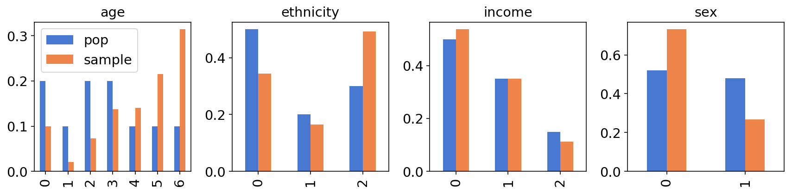
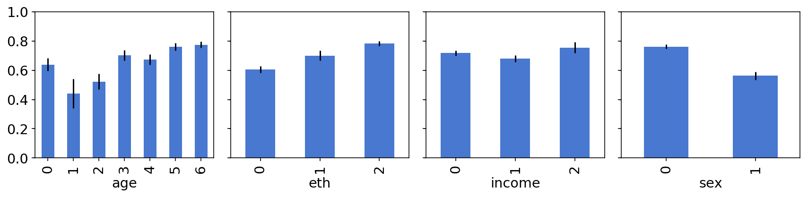
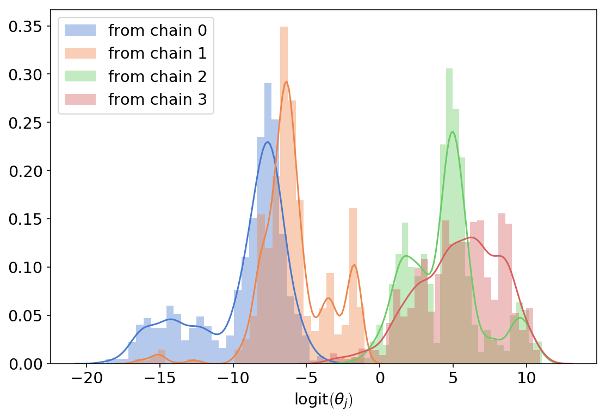
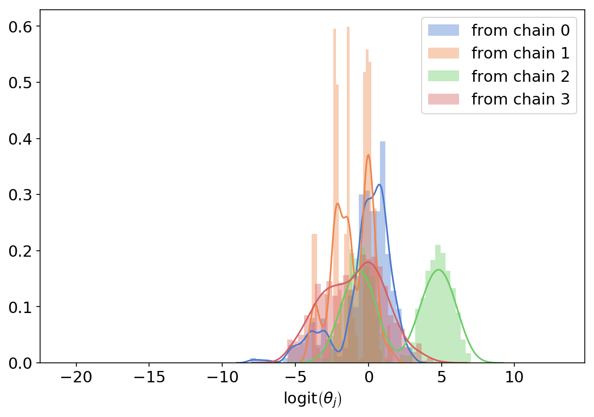
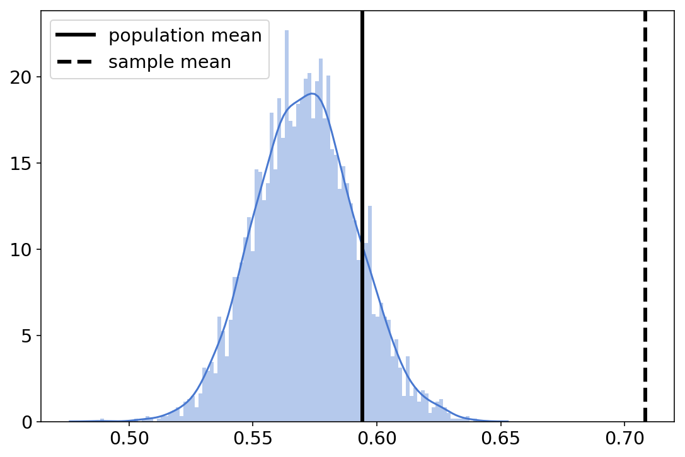
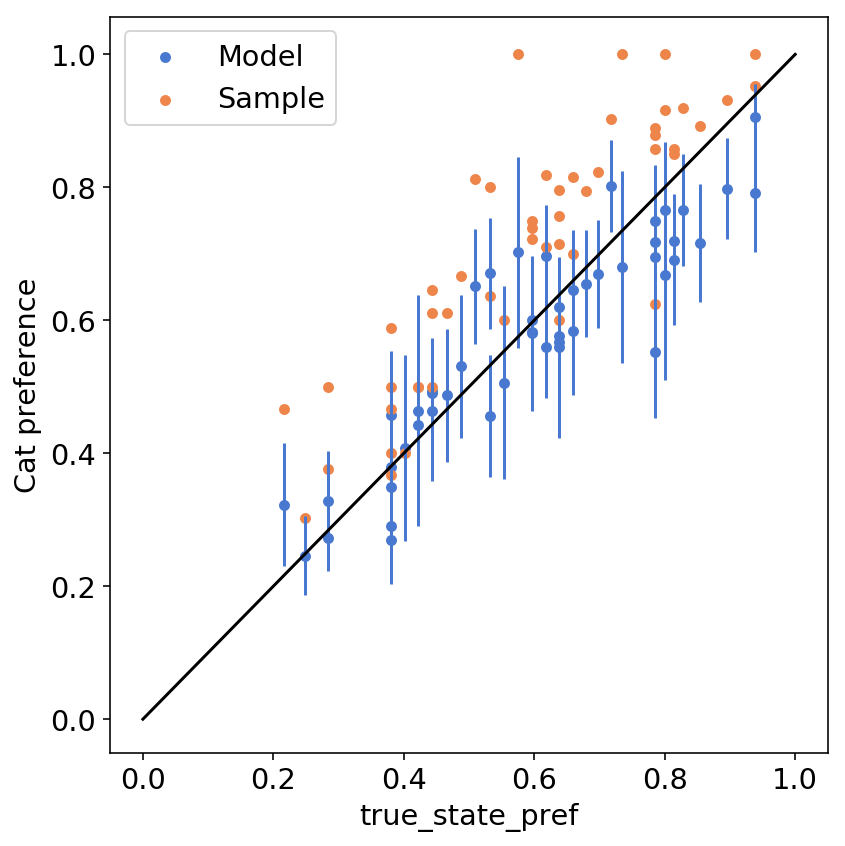
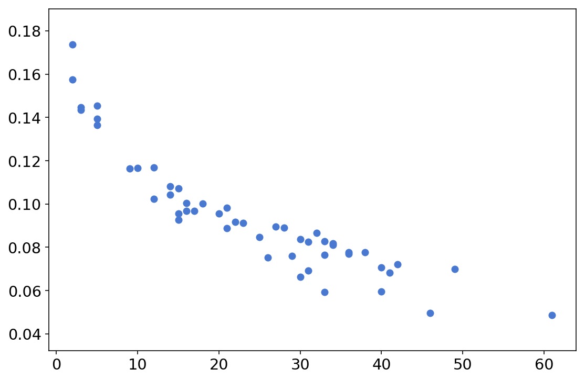

Mr. P meets TFP - mixed effects model with post-stratification in TensorFlow Probability
TL;DR
We’ll:
- Learn an interesting method for generalizing inferences from a biased sample to a population of interest
- See why prior predictive checks are great
- Implement a simple mixed-effects model in TFP
Intro
This post is a TFP port of Lauren Kennedy and Jonah Gabry’s excellent MRP with rstanarm vignette. It describes a very interesting statistical method for generalizing inferences from a biased sample to a population of interest. The method is called multilevel regression with poststratification, or MRP if you prefer acronyms, or Mister P if you prefer statisticians jokes. Along the way, we’ll see why prior predictive checks are so nice and important, how to implement a mixed-effect model in TFP, and how to make predictions for smaller sub-populations.
I chose to port the vignette because the problem MRP address - generalizing from a biased sample to a population - is so prevalent and important, that knowing what are the possible tools to handle it seemed valuable. I found that porting models from one language to another is an excellent way to learn the model, the problem, and the languages themselves, so it’s kind of a win-win-win and publishing it might also help others so why not.
I strongly recommend reading the original vignette; the people who wrote it are much more knowledgeable than I am about this subject, and I also chose to focus on slightly different things so they’re not 100% overlapping. At the end of this post you can find links for further reading.
Imports and helper functions - data generation
from collections import namedtuple
import numpy as np
import itertools as it
import pandas as pd
from scipy.special import expit as inv_logit
from scipy.stats import sem
import seaborn as sns
import matplotlib.pyplot as plt
np.random.seed(98)
sns.set_palette("muted")
params = {
'legend.fontsize': 'x-large',
'figure.figsize': (9, 6),
'axes.labelsize': 'x-large',
'axes.titlesize':'x-large',
'xtick.labelsize':'x-large',
'ytick.labelsize':'x-large'
}
plt.rcParams.update(params)
%config InlineBackend.figure_format = 'retina'
The data
The data we’ll work with is simulated data; this has the obvious advantage that we know the ground truth so we’ll be able to assess just how well our method generalizes to the population. The data describes the proportion of the population who would choose to adopt a cat over a dog, given the opportunity. Our outcome variable in this example is binary (cat/dog), but MRP is not restricted to such outcomes and can be used for discrete outcomes with more than two values, as well as continuous outcomes.
These are the variables we’ll be working with:
sex = range(2)
eth = range(3)
age = range(7)
income = range(3)
state = range(50)
They’re all categorical; we use zero-based indexing to enumerate them (instead of calling them ‘Male’, ‘Female’ etc) because it’ll make all the indexing gymnastics in the actual implementation somewhat simpler.
poststrat is a dataframe containing all $2\times3\times7\times3\times50=6300$ possible combinations of these variables:
poststrat = pd.DataFrame(
list(it.product(sex, eth, age, income, state)),
columns=["sex", "eth", "age", "income", "state"],
)
poststrat.sample(5)
| sex | eth | age | income | state | |
|---|---|---|---|---|---|
| 4675 | 1 | 1 | 3 | 0 | 25 |
| 1620 | 0 | 1 | 3 | 2 | 20 |
| 1749 | 0 | 1 | 4 | 1 | 49 |
| 1141 | 0 | 1 | 0 | 1 | 41 |
| 2460 | 0 | 2 | 2 | 1 | 10 |
poststrat.shape
(6300, 5)
Below are the different proportions of the different variables in the population. For example, 20% of the population are in the first age group, 10% are in the second, etc. For each combination of variables we’ll compute the number of people that share this specific combination by multiplying the total number of people in the population (assumed to be 250 million) with the different probabilities (this means we’re assuming the joint probability distribution factorizes, that is - that the different variables are independent).
p_age = np.array([0.2, 0.1, 0.2, 0.2, 0.10, 0.1, 0.1])
p_sex = np.array([0.52, 0.48])
p_eth = np.array([0.5, 0.2, 0.3])
p_income = np.array([0.50, 0.35, 0.15])
p_state_tmp = np.random.uniform(low=10, high=20, size=50)
p_state = np.array(p_state_tmp / p_state_tmp.sum())
poststrat["N"] = (
250e6
* p_sex[poststrat["sex"]]
* p_eth[poststrat["eth"]]
* p_age[poststrat["age"]]
* p_income[poststrat["income"]]
* p_state[poststrat["state"]]
)
We also assume that different groups have different probabilities of being included in the sample; in a way, that’s the entire point (if all groups had the same probability of being included in the sample then the sample was representative of the population). There’s a baseline probability of being in the sample, but it cancels out in the weighted average; what determines who is in our sample is p_response_weighted, which is p_response weighted by the number of people in each group:
p_response_baseline = 0.01
p_response_sex = np.array([2, 0.8]) / 2.8
p_response_eth = np.array([1, 1.2, 2.5]) / 4.7
p_response_age = np.array([1, 0.4, 1, 1.5, 3, 5, 7]) / 18.9
p_response_inc = np.array([1, 0.9, 0.8]) / 2.7
p_response_state = np.random.beta(a=1, b=1, size=50)
p_response_state = p_response_state / p_response_state.sum()
p_response = (
p_response_baseline
* p_response_sex[poststrat["sex"]]
* p_response_eth[poststrat["eth"]]
* p_response_age[poststrat["age"]]
* p_response_inc[poststrat["income"]]
* p_response_state[poststrat["state"]]
)
p_response_weighted = poststrat["N"] * p_response / (poststrat["N"] * p_response).sum()
We now sample 1200 individuals from the entire population. This means we’re actually sampling rows from our poststrat dataframe with different probabilities given by p_response_weighted:
n = 1200
people = np.random.choice(
np.arange(poststrat.shape[0]), size=n, replace=True, p=p_response_weighted
)
sample = poststrat.drop("N", axis=1).iloc[people].reset_index()
sample.sample(5)
| index | sex | eth | age | income | state | |
|---|---|---|---|---|---|---|
| 520 | 2141 | 0 | 2 | 0 | 0 | 41 |
| 287 | 2626 | 0 | 2 | 3 | 1 | 26 |
| 870 | 2591 | 0 | 2 | 3 | 0 | 41 |
| 69 | 1517 | 0 | 1 | 3 | 0 | 17 |
| 169 | 4104 | 1 | 0 | 6 | 1 | 4 |
Now we’re getting to the thing we’ll actually measure in the sample (and then try to generalize to the population) - cat preference. Below are the coefficients of a regression model that determines the log-odds of cat preference, $\log\frac{P(\text{prefers cats})}{P(\text{prefers dogs})}$ for each group in the population. We’ll use these coefficients to compute the actual probability of cats preference for each group:
coef_sex = np.array([0, -0.3])
coef_eth = np.array([0, 0.6, 0.9])
coef_age = np.array([0, -0.2, -0.3, 0.4, 0.5, 0.7, 0.8, 0.9])
coef_income = np.array([0, -0.2, 0.6])
coef_state = np.insert(np.random.normal(0, 1, 49).round(1), 0, 0)
coef_age_sex = np.vstack(
[
np.array([0, 0.1, 0.23, 0.3, 0.43, 0.5, 0.6]),
np.array([0, -0.1, -0.23, -0.5, -0.43, -0.5, -0.6]),
]
).T
true_pop = poststrat.drop("N", axis=1)
true_pop["cat_pref"] = inv_logit(
coef_sex[true_pop["sex"]]
+ coef_eth[true_pop["eth"]]
+ coef_age[true_pop["age"]]
+ coef_income[true_pop["income"]]
+ coef_state[true_pop["state"]]
+ coef_age_sex[true_pop["age"], true_pop["sex"]]
)
true_pop.sample(5)
| sex | eth | age | income | state | cat_pref | |
|---|---|---|---|---|---|---|
| 6124 | 1 | 2 | 5 | 2 | 24 | 0.71095 |
| 177 | 0 | 0 | 1 | 0 | 27 | 0.549834 |
| 5755 | 1 | 2 | 3 | 1 | 5 | 0.331812 |
| 2102 | 0 | 2 | 0 | 0 | 2 | 0.802184 |
| 3931 | 1 | 0 | 5 | 0 | 31 | 0.524979 |
We now use the computed probabilities to determine, for each individual in our sample, whether she’s a cats person or a dogs person. Note that this is still the fake data generation part; we’re not modelling anything yet.
sample["cat_pref"] = np.random.binomial(n=1, p=true_pop["cat_pref"][people], size=n)
sample.head()
| index | sex | eth | age | income | state | cat_pref | |
|---|---|---|---|---|---|---|---|
| 0 | 671 | 0 | 0 | 4 | 1 | 21 | 1 |
| 1 | 2141 | 0 | 2 | 0 | 0 | 41 | 1 |
| 2 | 906 | 0 | 0 | 6 | 0 | 6 | 1 |
| 3 | 3062 | 0 | 2 | 6 | 1 | 12 | 1 |
| 4 | 6043 | 1 | 2 | 5 | 0 | 43 | 1 |
Just to get a glimpse of the problem Mr. P is trying to solve, the sample mean is:
sample["cat_pref"].mean()
0.7083333333333334
While the true mean in the population (which is a weighted sum of the per-group probabilities and the group sizes) is:
true_pop_pref = sum(true_pop["cat_pref"] * poststrat["N"]) / sum(poststrat["N"])
true_pop_pref
0.5941253009200917
So our sample overestimates cats-lovin’ in the population by 18% - people who like cats also like taking surveys.
Visualizations
To get a better understanding of the problem (unrepresentativeness of the sample), we’ll plot some summary statistics and see how they differ:
f, ax = plt.subplots(1, 4, figsize=(12, 3))
pd.DataFrame(
dict(pop=pd.Series(p_age), sample=(sample.age.value_counts().sort_index() / n))
).plot(kind="bar", ax=ax[0], title="age")
pd.DataFrame(
dict(pop=pd.Series(p_eth), sample=(sample.eth.value_counts().sort_index() / n))
).plot(kind="bar", ax=ax[1], legend=False, title="ethnicity")
pd.DataFrame(
dict(
pop=pd.Series(p_income), sample=(sample.income.value_counts().sort_index() / n)
)
).plot(kind="bar", ax=ax[2], legend=False, title="income")
pd.DataFrame(
dict(pop=pd.Series(p_sex), sample=(sample.sex.value_counts().sort_index() / n))
).plot(kind="bar", ax=ax[3], legend=False, title="sex")
plt.tight_layout()

At least by eyeballing the charts, the differences seem substantial; for example, if there’s a big difference in cats preference between males and females, we expect to see a substantial difference between the cats preference in the sample and in the population.
We can also plot how cats preference changes between different groups within our sample - for example, is there a difference in cats preference between different age groups? (yes there is)
f, axes = plt.subplots(1, 4, figsize=(12, 3), sharey=True)
for key, ax in zip(["age", "eth", "income", "sex"], axes):
sample.groupby(key)["cat_pref"].agg(dict(mean=np.mean, std=sem)).reset_index().plot(
kind="bar", x=key, y="mean", yerr="std", ax=ax, legend=False
)
plt.ylim(0, 1)
plt.tight_layout()

The model
We now turn to the MR part of MRP - the multilevel regression part. More specifically, we’ll build a Bayesian multilevel logistic regression model of cats preference. Even more specifically, we’ll build what’s called a “mixed effects” model. Mixed effects models are one of those places that, at least for me, the statisticians terminology is extremely confusing; it also seems to be inconsistent between different academic fields. I usually find it easier to look at the actual model specification to understand what’s going on:
For each group $j\in\left[1,…,6300\right]$ we model the probability of cats preference as
$$
\begin{align}
\theta_j & = logit^{-1}(
\alpha +
X_{j}\beta
+ \alpha_{\rm state[j]}^{\rm state}
+ \alpha_{\rm age[j]}^{\rm age}
+ \alpha_{\rm eth[j]}^{\rm eth}
+ \alpha_{\rm inc[j]}^{\rm inc}
) \\
\alpha_{\rm state[j]}^{\rm state} & \sim N(0,\sigma^{\rm state}) \\
\alpha_{\rm age[j]}^{\rm age} & \sim N(0,\sigma^{\rm age})\\
\alpha_{\rm eth[j]}^{\rm eth} & \sim N(0,\sigma^{\rm eth})\\
\alpha_{\rm inc[j]}^{\rm inc} &\sim N(0,\sigma^{\rm inc}) \\
\sigma^{\rm state} & \sim {\rm HalfNormal}(1) \\
\sigma^{\rm age} & \sim {\rm HalfNormal}(1) \\
\sigma^{\rm eth} & \sim {\rm HalfNormal}(1) \\
\sigma^{\rm income} & \sim {\rm HalfNormal}(1) \\
\beta & \sim N(0,2.5) \\
\alpha & \sim N(0,10) \\
\end{align}
$$
We’ve seen expressions like $\alpha_{\rm state[j]}^{\rm state}$ when we’ve implemented varying intercepts models. What makes this a “mixed effects” models is that $\beta$ is the same $\beta$ for all groups, while the different $\alpha^*$-s vary between groups. I’m sure there are subtleties and nuances that this doesn’t capture, but for me this is a simple-to-read, simple-to-implement explanation of mixed effects models.
As for the model itself:
- $X$ is a (binary) design matrix that holds indicators for sex, age and sex-age interactions - we’ll construct it in a second.
- $\alpha$ is an intercept term.
- $\beta$ is a coefficient vector.
- The different $\alpha^*$-s are per-group varying intercepts.
- The different $\sigma^*$-s are hyperpriors for variation between groups.
The priors on $\alpha,\beta$ are rstanarm’s default priors; I couldn’t find rstanarm’s default prior on the $\sigma^*$ so I chose to use a halfnormal(1) prior.
Our design matrix $X$ will represent a one-hot-encoded representation of the sampled individuals sex, age, and sex-age interaction term. Here’s how it looks like:
factors = pd.get_dummies(sample[["sex", "age"]].astype("category")).drop(
["sex_0", "age_0"], axis=1
)
interactions = pd.DataFrame(
factors.drop("sex_1", axis=1).values * factors["sex_1"].values[:, None],
columns=[f"sex_1*age_{i+1}" for i in range(6)],
)
features = pd.concat([factors, interactions], axis=1)
features.head()
| sex_1 | age_1 | age_2 | age_3 | age_4 | age_5 | age_6 | sex_1*age_1 | sex_1*age_2 | sex_1*age_3 | sex_1*age_4 | sex_1*age_5 | sex_1*age_6 | |
|---|---|---|---|---|---|---|---|---|---|---|---|---|---|
| 0 | 0 | 0 | 0 | 0 | 1 | 0 | 0 | 0 | 0 | 0 | 0 | 0 | 0 |
| 1 | 0 | 0 | 0 | 0 | 0 | 0 | 0 | 0 | 0 | 0 | 0 | 0 | 0 |
| 2 | 0 | 0 | 0 | 0 | 0 | 0 | 1 | 0 | 0 | 0 | 0 | 0 | 0 |
| 3 | 0 | 0 | 0 | 0 | 0 | 0 | 1 | 0 | 0 | 0 | 0 | 0 | 0 |
| 4 | 1 | 0 | 0 | 0 | 0 | 1 | 0 | 0 | 0 | 0 | 0 | 1 | 0 |
features.shape
(1200, 13)
To make TF shape issues simpler, we convert it to a numpy array and transpose it:
features = features.values.T
Imports and helper functions - inference
import tensorflow as tf
import tensorflow_probability as tfp
from tensorflow_probability import distributions as tfd
from tensorflow_probability import bijectors as tfb
import arviz as az
n_chains = 4
dtype = tf.float32
def step_size_setter_fn(pkr, new_step_size):
return pkr._replace(
inner_results=pkr.inner_results._replace(step_size=new_step_size)
)
factors = pd.get_dummies(sample[["sex", "age"]].astype("category")).drop(
["sex_0", "age_0"], axis=1
)
interactions = pd.DataFrame(
factors.drop("sex_1", axis=1).values * factors["sex_1"].values[:, None],
columns=[f"sex_1*age_{i}" for i in range(6)],
)
features = pd.concat([factors, interactions], axis=1).values.T
def trace_fn(current_samp, pkr):
return (
pkr.inner_results.inner_results.target_log_prob,
pkr.inner_results.inner_results.leapfrogs_taken,
pkr.inner_results.inner_results.has_divergence,
pkr.inner_results.inner_results.energy,
pkr.inner_results.inner_results.log_accept_ratio,
)
@tf.function(experimental_compile=True)
def run_nuts(target_log_prob_fn, initial_states, bijectors_list):
step_sizes = [1e-2 * tf.ones_like(i) for i in initial_states]
kernel = tfp.mcmc.TransformedTransitionKernel(
tfp.mcmc.nuts.NoUTurnSampler(target_log_prob_fn, step_size=step_sizes),
bijector=bijectors_list,
)
kernel = tfp.mcmc.DualAveragingStepSizeAdaptation(
kernel,
target_accept_prob=tf.cast(0.8, dtype=dtype),
num_adaptation_steps=800,
step_size_setter_fn=step_size_setter_fn,
step_size_getter_fn=lambda pkr: pkr.inner_results.step_size,
log_accept_prob_getter_fn=lambda pkr: pkr.inner_results.log_accept_ratio,
)
# Sampling from the chain.
mcmc_trace, pkr = tfp.mcmc.sample_chain(
num_results=1000,
num_burnin_steps=1000,
current_state=[
bijector.forward(state)
for bijector, state in zip(bijectors_list, initial_states)
],
kernel=kernel,
trace_fn=trace_fn,
)
return mcmc_trace, pkr
# using pymc3 naming conventions, with log_likelihood instead of lp so that ArviZ can compute loo and waic
sample_stats_name = [
"log_likelihood",
"tree_size",
"diverging",
"energy",
"mean_tree_accept",
]
def tfp_trace_to_arviz(tfp_trace, var_names=None, sample_stats_name=sample_stats_name):
samps, trace = tfp_trace
if var_names is None:
var_names = ["var " + str(x) for x in range(len(samps))]
sample_stats = {k: v.numpy().T for k, v in zip(sample_stats_name, trace)}
posterior = {
name: tf.transpose(samp, [1, 0, 2]).numpy()
for name, samp in zip(var_names, samps)
}
return az.from_dict(posterior=posterior, sample_stats=sample_stats)
For more details about calling TFP’s NUTS sampler, and the helper functions defined above, see here.
First implemetation
We now turn to implement the whole model in TFP. Since there aren’t many complicated intermediate calculations, a JointDistributionSequential is a reasonable choice for implementing the model. For a more detailed explanation on the different JointDistribution alternatives, see this post.
model = tfd.JointDistributionSequential(
[
tfd.HalfNormal(1), # sigma_state
lambda sigma_state: tfd.Sample(tfd.Normal(0, sigma_state), sample_shape=50),
tfd.HalfNormal(1), # sigma_eth
lambda sigma_eth: tfd.Sample(tfd.Normal(0, sigma_eth), sample_shape=3),
tfd.HalfNormal(1), # sigma_income
lambda sigma_income: tfd.Sample(tfd.Normal(0, sigma_income), sample_shape=3),
tfd.HalfNormal(1), # sigma_age
lambda sigma_age: tfd.Sample(tfd.Normal(0, sigma_age), sample_shape=7),
tfd.Normal(0, 10), # intercept
tfd.Sample(tfd.Normal(0, 2.5), sample_shape=13), # coeffs
lambda coeffs, intercept, coef_age, sigma_age, coef_income, sigma_income, coef_eth, sigma_eth, coef_state: tfd.Independent(
tfd.Binomial(
total_count=1,
logits=intercept[:, tf.newaxis]
+ coeffs @ tf.cast(features, tf.float32)
+ tf.squeeze(
tf.gather(coef_age, tf.cast(sample["age"], tf.int32), axis=-1)
)
+ tf.squeeze(
tf.gather(coef_income, tf.cast(sample["income"], tf.int32), axis=-1)
)
+ tf.squeeze(
tf.gather(coef_eth, tf.cast(sample["eth"], tf.int32), axis=-1)
)
+ tf.squeeze(
tf.gather(coef_state, tf.cast(sample["state"], tf.int32), axis=-1)
),
),
reinterpreted_batch_ndims=1,
),
]
)
The model description isn’t short, but it doesn’t contain anything we haven’t covered in previous posts. Let’s call .sample and .log_prob just to make sure everything works:
[s.shape for s in model.sample(n_chains)]
[TensorShape([4]),
TensorShape([4, 50]),
TensorShape([4]),
TensorShape([4, 3]),
TensorShape([4]),
TensorShape([4, 3]),
TensorShape([4]),
TensorShape([4, 7]),
TensorShape([4]),
TensorShape([4, 13]),
TensorShape([4, 1200])]
model.log_prob(model.sample(n_chains))
<tf.Tensor: shape=(4,), dtype=float32, numpy=array([-121.06135 , 21.950146, -69.38415 , -224.08742 ], dtype=float32)>
So our model technically works… but does it makes sense?
Prior predictive checks
Prior predictive checks are an extremely valuable technique to assess your model and your priors, before seeing any data. To learn more about PPCs (horrible acronym as the first P can also stand for posterior), I highly recommend Michael Betancourt’s principled bayesian workflow case study.
Anyway, let’s generate samples from our model, and use the samples to compute the logits (the linear expression within the inv_logit function):
inits = model.sample(n_chains)
coeffs, intercept, coef_age, _, coef_income, _, coef_eth, _, coef_state = inits[1:10][
::-1
]
logits = (
intercept[:, tf.newaxis]
+ coeffs @ tf.cast(features, tf.float32)
+ tf.squeeze(tf.gather(coef_age, tf.cast(sample["age"], tf.int32), axis=-1))
+ tf.squeeze(tf.gather(coef_income, tf.cast(sample["income"], tf.int32), axis=-1))
+ tf.squeeze(tf.gather(coef_eth, tf.cast(sample["eth"], tf.int32), axis=-1))
+ tf.squeeze(tf.gather(coef_state, tf.cast(sample["state"], tf.int32), axis=-1))
)
Each chain gives us 1200 different numbers - the log-odds for cat preference for our 1200 sampled individuals. Let’s plot these four histograms:
for i, l in enumerate(logits):
sns.distplot(l, bins=30, label=f"from chain {i}")
plt.legend()
plt.xlabel("${\\rm logit}\\left(\\theta_j\\right)$")
lim = plt.xlim();

Note that it’s OK that each color (each chain) is multimodal - this just means that we’re inferring different “types” of cats preference across groups.
The problem with what we got is the scale - having ${\rm logit}\left(\theta_j\right)=-15$ means $\theta_j=0.000000003…$ which doesn’t really makes sense, even for a group that really likes dogs. This implies that our priors are way too diffuse, the normal(0,10) being the primary suspect. So let’s make everything normal(0,1) and do this again:
Same likelihood, better priors
model = tfd.JointDistributionSequential(
[
tfd.HalfNormal(1), # sigma_state
lambda sigma_state: tfd.Sample(tfd.Normal(0, sigma_state), sample_shape=50),
tfd.HalfNormal(1), # sigma_eth
lambda sigma_eth: tfd.Sample(tfd.Normal(0, sigma_eth), sample_shape=3),
tfd.HalfNormal(1), # sigma_income
lambda sigma_income: tfd.Sample(tfd.Normal(0, sigma_income), sample_shape=3),
tfd.HalfNormal(1), # sigma_age
lambda sigma_age: tfd.Sample(tfd.Normal(0, sigma_age), sample_shape=7),
tfd.Normal(0, 1), # intercept
tfd.Sample(tfd.Normal(0, 1), sample_shape=13), # coeffs
lambda coeffs, intercept, coef_age, a, coef_income, b, coef_eth, c, coef_state: tfd.Independent(
tfd.Binomial(
total_count=1,
logits=intercept[:, tf.newaxis]
+ coeffs @ tf.cast(features, tf.float32)
+ tf.squeeze(
tf.gather(coef_age, tf.cast(sample["age"], tf.int32), axis=-1)
)
+ tf.squeeze(
tf.gather(coef_income, tf.cast(sample["income"], tf.int32), axis=-1)
)
+ tf.squeeze(
tf.gather(coef_eth, tf.cast(sample["eth"], tf.int32), axis=-1)
)
+ tf.squeeze(
tf.gather(coef_state, tf.cast(sample["state"], tf.int32), axis=-1)
),
),
reinterpreted_batch_ndims=1,
),
]
)
inits = model.sample(n_chains)
coeffs, intercept, coef_age, _, coef_income, _, coef_eth, _, coef_state = inits[1:10][
::-1
]
logits = (
intercept[:, tf.newaxis]
+ coeffs @ tf.cast(features, tf.float32)
+ tf.squeeze(tf.gather(coef_age, tf.cast(sample["age"], tf.int32), axis=-1))
+ tf.squeeze(tf.gather(coef_income, tf.cast(sample["income"], tf.int32), axis=-1))
+ tf.squeeze(tf.gather(coef_eth, tf.cast(sample["eth"], tf.int32), axis=-1))
+ tf.squeeze(tf.gather(coef_state, tf.cast(sample["state"], tf.int32), axis=-1))
)
for i, l in enumerate(logits):
sns.distplot(l, bins=30, label=f"from chain {i}")
plt.legend()
plt.xlabel("${\\rm logit}\\left(\\theta_j\\right)$")
plt.xlim(*lim);

This makes much more sense. The variance between groups is still there but it doesn’t spread across several order of magnitude (that is, with this prior it’s no longer plausible that some groups love cats 10 million times more than other groups). This seems like a good starting point.
Note that the overly wide priors are also very problematic, inference wise - running the same notebook with the first model returns all sorts of sampling problems (divergent transitions, bad mixing, random seed dependence etc) while the 2nd, more informed version does not.
Getting the shapes right
This is, by far, the hardest thing for me when building a probablistic model with TFP. Knowing where to put [...,], tf.newaxis or [None,] requires some trial and error - here are some checks to verify we got this right (after a lot of failed attempts and some help from Junpeng Lao):
First, we want to make sure the model can evaluate the log probability of its own samples, and that we get n_chains different numbers:
model.log_prob(inits)
<tf.Tensor: shape=(4,), dtype=float32, numpy=array([-619.5229 , -520.8101 , -460.97076, -609.21765], dtype=float32)>
Second, we want to make sure that all shapes of the different parameters in our samples are as we expect, which basically should be the number of chains in the first axis and the shape of whatever it is we’re sampling in the rest - or nothing, if it’s just a scalar:
[s.shape for s in inits]
[TensorShape([4]),
TensorShape([4, 50]),
TensorShape([4]),
TensorShape([4, 3]),
TensorShape([4]),
TensorShape([4, 3]),
TensorShape([4]),
TensorShape([4, 7]),
TensorShape([4]),
TensorShape([4, 13]),
TensorShape([4, 1200])]
The main thing to look out for here are redundant extra dimensions (for example, TensorShape([4, 1]) instead of TensorShape([4]) - these will almost always cause broadcasting issues.
Next, we want to add an extra axis for the data we condition on. Again, this is for broadcasting purposes - we want to make sure tf “replicates” the data across different chains.
tf.cast(sample["cat_pref"], tf.float32)[tf.newaxis, ...].shape
TensorShape([1, 1200])
Finally, the log_prob function closure - we want to make sure our log_prob function gets as inputs all the different parameters, concatenates them with the data we’re conditioning on, and then uses the original model log_prob function to evaluate; practically, we want to verify that if we pass all the parameters (without the conditioning data), we get n_chains different numbers:
lp = lambda *x: model.log_prob(
list(x) + [tf.cast(sample["cat_pref"], tf.float32)[tf.newaxis, ...]]
)
lp(*inits[:-1])
<tf.Tensor: shape=(4,), dtype=float32, numpy=array([-1315.5156, -1436.2715, -1799.2578, -1901.1874], dtype=float32)>
Inference
With sensible priors and TFP shape issues dealt with, we can proceed with actually runnning the sampler.
inits = [
tf.random.uniform(s.shape, -2, 2, tf.float32, name="initializer") for s in inits
]
trace, kr = run_nuts(
lp,
inits[:-1],
bijectors_list=[
tfb.Exp(),
tfb.Identity(),
tfb.Exp(),
tfb.Identity(),
tfb.Exp(),
tfb.Identity(),
tfb.Exp(),
tfb.Identity(),
tfb.Identity(),
tfb.Identity(),
],
)
Always check your TF shapes:
[s.shape for s in trace]
[TensorShape([1000, 4]),
TensorShape([1000, 4, 50]),
TensorShape([1000, 4]),
TensorShape([1000, 4, 3]),
TensorShape([1000, 4]),
TensorShape([1000, 4, 3]),
TensorShape([1000, 4]),
TensorShape([1000, 4, 7]),
TensorShape([1000, 4]),
TensorShape([1000, 4, 13])]
This looks good; for arviz intergration purposes, we’ll add an extra axis for the parameters whose tensor shape is TensorShape([1000, 4]), and then call our tfp_trace_to_arviz helper function:
trace_ex = [s[..., tf.newaxis] if len(s.shape) == 2 else s for s in trace]
az_trace = tfp_trace_to_arviz((trace_ex, kr))
az.summary(az_trace).head(5)
| mean | sd | hpd_3% | hpd_97% | mcse_mean | mcse_sd | ess_mean | ess_sd | ess_bulk | ess_tail | r_hat | |
|---|---|---|---|---|---|---|---|---|---|---|---|
| var 0[0] | 1.056 | 0.153 | 0.779 | 1.338 | 0.004 | 0.003 | 1785 | 1771 | 1806 | 2668 | 1 |
| var 1[0] | 0.016 | 0.607 | -1.173 | 1.155 | 0.011 | 0.009 | 2822 | 2235 | 2843 | 2538 | 1 |
| var 1[1] | 0.025 | 0.505 | -0.997 | 0.927 | 0.008 | 0.008 | 3978 | 1785 | 4013 | 2918 | 1 |
| var 1[2] | 0.477 | 0.463 | -0.362 | 1.38 | 0.007 | 0.006 | 4207 | 2794 | 4232 | 2521 | 1 |
| var 1[3] | -0.36 | 0.764 | -1.896 | 1.008 | 0.017 | 0.013 | 2102 | 1745 | 2132 | 1908 | 1 |
Sampling diagnostics look good; we have no divergent transitions, and $\hat{R}$ values are all close to 1:
az.summary(az_trace)["r_hat"].describe()
count 81.0
mean 1.0
std 0.0
min 1.0
25% 1.0
50% 1.0
75% 1.0
max 1.0
Name: r_hat, dtype: float64
We won’t go down the model-diagnostics-rabbit-hole now; we’re here to learn about Mister P.
P part
So far we’ve defined, critisized and fitted a multilevel logisitic regression model. Now comes the poststratification part. Poststratification is a technical and intimidating word; it basically means “adjusting the inferences from my sample to the population by using additional knowledge about proportions in the population”. To do so, we’ll:
- Compute a design matrix $X$ for the population.
- Use our 4000 sampled parameters to compute 4000 different logits for each group in the population. This will yield a 4000x6300 matrix.
- For each row (representing a single draw from our posterior), we’ll compute the population mean as a weighted sum of per-group cat preference and group’s size. This will give us a vector of 4000 numbers.
The mean of these 4000 numbers will be our estimate for the population mean.
post_factors = pd.get_dummies(poststrat[["sex", "age"]].astype("category")).drop( ["sex_0", "age_0"], axis=1 ) post_interactions = pd.DataFrame( post_factors.drop("sex_1", axis=1).values * post_factors["sex_1"].values[:, None], columns=[f"sex_1*age_{i}" for i in range(6)], ) post_features = pd.concat([post_factors, post_interactions], axis=1).values.Tintercept = trace[8] coeffs = trace[9] coef_age = trace[7] coef_income = trace[5] coef_eth = trace[3] coef_state = trace[1] logits = ( intercept[..., tf.newaxis] + coeffs @ tf.cast(post_features, tf.float32) + tf.gather(trace[7], tf.cast(poststrat["age"], tf.int32), axis=-1) + tf.gather(coef_income, tf.cast(poststrat["income"], tf.int32), axis=-1) + tf.gather(coef_eth, tf.cast(poststrat["eth"], tf.int32), axis=-1) + tf.gather(coef_state, tf.cast(poststrat["state"], tf.int32), axis=-1) ) posterior_prob = inv_logit(logits) posterior_prob = posterior_prob.reshape(-1, 6300) posterior_prob.shape(4000, 6300)
poststrat_prob = posterior_prob @ poststrat["N"][:, None] / poststrat["N"].sum() poststrat_prob.shape(4000, 1)
So how good is MRP? We plot the histogram of our 4000 different estimates of the population mean, together with the estimate from the sample (dashed line) and the true mean:
sns.distplot(poststrat_prob, bins=100)
plt.axvline(true_pop_pref, label="population mean", lw=3, c="k")
plt.axvline(sample["cat_pref"].mean(), label="sample mean", lw=3, ls="--", c="k")
plt.legend();

You can see that the posterior mean is much closer to the true mean - so MRP definitely helps!
Estimates for states
The nice thing about having a model is that we can use it to answer all sorts of different questions. For example, we can repeat the analysis we just did and estimate per-state means. We’re still computing the design matrix, logits etc as before but we’re constraining ourselves to one state at a time. For each state, we’ll compute the model’s mean and standard deviations, together with the true mean and the sample mean:
state_data = namedtuple(
"state_data",
[
"state",
"model_state_sd",
"model_state_pref",
"sample_state_pref",
"true_state_pref",
"N",
],
)
states_data = []
for i in range(50):
state_features = np.squeeze(post_features[:, np.where(poststrat.state == i)])
state_poststrat = poststrat.query(f"state=={i}")
logits = (
intercept[..., tf.newaxis]
+ coeffs @ tf.cast(state_features, tf.float32)
+ tf.gather(
trace[7],
tf.cast(state_poststrat.query(f"state=={i}")["age"], tf.int32),
axis=-1,
)
+ tf.gather(
coef_income,
tf.cast(state_poststrat.query(f"state=={i}")["income"], tf.int32),
axis=-1,
)
+ tf.gather(
coef_eth,
tf.cast(state_poststrat.query(f"state=={i}")["eth"], tf.int32),
axis=-1,
)
+ tf.gather(
coef_state,
tf.cast(state_poststrat.query(f"state=={i}")["state"], tf.int32),
axis=-1,
)
)
posterior_prob = inv_logit(logits)
posterior_prob = posterior_prob.reshape(-1, state_features.shape[1])
state_poststrat_prob = (
posterior_prob
@ state_poststrat.query(f"state=={i}")["N"][:, None]
/ state_poststrat["N"].sum()
)
states_data.append(
state_data(
i,
state_poststrat_prob.std(),
state_poststrat_prob.mean(),
sample.query(f"state=={i}")["cat_pref"].mean(),
np.sum(true_pop.query(f"state=={i}")["cat_pref"] * state_poststrat["N"])
/ np.sum(state_poststrat["N"]),
sample.query(f"state=={i}").shape[0],
)
)
state_df = pd.DataFrame(states_data)
state_df.head()
| state | model_state_sd | model_state_pref | sample_state_pref | true_state_pref | N | |
|---|---|---|---|---|---|---|
| 0 | 0 | 0.116844 | 0.580393 | 0.75 | 0.596565 | 12 |
| 1 | 1 | 0.0956771 | 0.583293 | 0.7 | 0.658961 | 20 |
| 2 | 2 | 0.0817888 | 0.669766 | 0.823529 | 0.69817 | 34 |
| 3 | 3 | 0.145332 | 0.505946 | 0.6 | 0.553341 | 5 |
| 4 | 4 | 0.0768275 | 0.493726 | 0.611111 | 0.443913 | 36 |
Graphically, this is how this looks like:
f, ax = plt.subplots(figsize=(6, 6))
state_df.plot(
x="true_state_pref",
y="model_state_pref",
yerr="model_state_sd",
ax=ax,
kind="scatter",
label="Model",
)
state_df.plot(
x="true_state_pref",
y="sample_state_pref",
ax=ax,
kind="scatter",
c="C1",
label="Sample",
)
ax.plot([0, 1], [0, 1], c="k")
f.tight_layout()
plt.ylabel("Cat preference");

We can see that the model predictions of state-wise preferences (blue dots) are closer to the identity line compared to the orange dots (sample per-state mean preferences).
Another interesting thing to see is how the model uncertainty (quantified by the standard deviation of the model predictions, per state) is related to sample size; we can see that the model is more confident (lower std) for states with higher N, which is what we would expect:
plt.scatter(state_df["N"], state_df["model_state_sd"])

Summary and further reading
This post was a code-oriented introduction to MRP, which is a very interesting technique that nicely leverages the built in advantages of multilevel models. We’ve also seen how taking a package’s priors for granted is not always a good idea, and how prior predictive checks can help us calibrate our priors and our beliefs.
In case you want to learn more, other than Lauren and Jonah’s vignette, these are all excellent reads:
- Austin Rochford’s MRPyMC3 tutorial
- Andrew Gelman’s post about Mister P’s secret sauce. Somewhat more technical and perhaps more political-science specific, but still interesting and relevant.
- Dan Simpson’s post on structured priors for MRP; this is somewhat more advanced, but Dan’s posts are always fun to read.
Adam Haber
Computational Neuroscience PhD Student
Interested in probabilistic programming, computational statistics, statistical physics and programming languages.